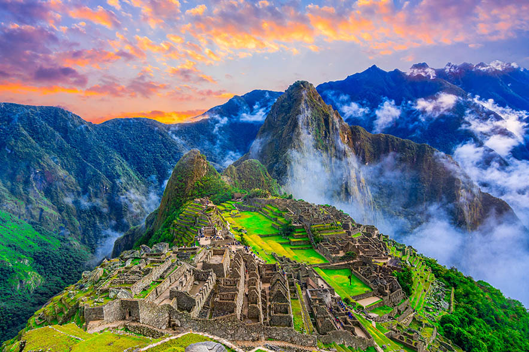

Se denominan las nuevas siete maravillas del mundo moderno a los monumentos que resultaron los ganadores en un concurso público e internacional celebrado en 2007, inspirado en la lista de las siete maravillas del mundo antiguo y realizado por una empresa privada de nombre New Open World Corporation
GRAN MURALLA CHINA
Es algo más que una muralla para un país como China. Representa también su cultura y filosofía de vida hoy en día. Sirvió para defenderse de los mongoles y llegó a tener más de 20.000 kilómetros desde Corea al desierto de Gobi.
Las primeras construcciones de la Gran Muralla China datan del siglo VII a.C. entre los que destaca el muro construido entre 220 y 206 a.C. por el primer emperador de China, Qin Shi Huang.
LA GRAN MURALLA CHINA (CHINA)
COLISEO ROMANO
Con capacidad para 65.000 espectadores, acogió luchas de gladiadores durante 500 años y se convirtió en el circo más grande entre todos los construidos en aquella época (año 72 d.C.).
Ha sufrido importantes daños por terremotos y expolios, pero mantiene todo su esplendor como símbolo icónico de la Roma imperial. Es una de las atracciones turísticas más populares de Roma y también tiene vínculos con la Iglesia Católica Romana
CHICHEN-ITZA
El Templo de Kukulcán es una pirámide escalonada mesoamericana que domina el centro del sitio arqueológico de Chichén Itzá en el estado mexicano de Yucatán. El edificio está designado más formalmente por los arqueólogos como Estructura 5B18 de Chichén Itzá.
La pirámide tiene 91 escalones en cada uno de sus lados. Sumando todos ellos más el escalón final son 365 escalones, tantos como días tiene un año
MACHU PICCHU
El Machu Picchu fue construido como propiedad del emperador inca Pachacuti (1438-1472).
A menudo denominada erróneamente como la "Ciudad Perdida de los Incas" y es todo un icono familiar de la civilización Inca. Fue declarado Santuario Histórico del Perú
en 1981 y Patrimonio de la Humanidad por la UNESCO en 1983.

EL CRISTO REDENTOR
Entre 1922 y 1931 se creó esta estatua art deco de Jesucristo en Río de Janeiro por el escultor polaco-francés Paul Landowski y los ingenieros Heitor da Silva Costa y Albert Caquo.
La estatua pesa 635 toneladas y está ubicada en la cima de la montaña Corcovado en el Parque Nacional del Bosque de Tijuca. Símbolo del cristianismo en todo el mundo, la estatua también se ha convertido
en un icono cultural tanto de Río de Janeiro como de Brasil.
TAJ-MAHAL
El Taj Mahal es un mausoleo de mármol blanco marfil en la orilla sur del río Yamuna en la ciudad de Agra (India).
Fue encargado en 1632 por el emperador Shah Jahan para albergar la tumba de su esposa favorita, Mumtaz Mahal. La tumba es la pieza central de un complejo que incluye una mezquita y una casa de huéspedes.
Su valor de construcción trasladado a hoy en día serían un 750 millones de euros
PETRA
Punto clave de paso de la Ruta de la Seda, se levantó en el reino Nabateao. Tras su abandono fue descubierta en 1812 por explorador suizo Johann Ludwig Burckhardt.
Se compone de 1.500 metros de longitud con fecha del año 312 a.C. Petra fue nombrada por la revista Smithsonian como uno de los "28 lugares para ver antes de morir".